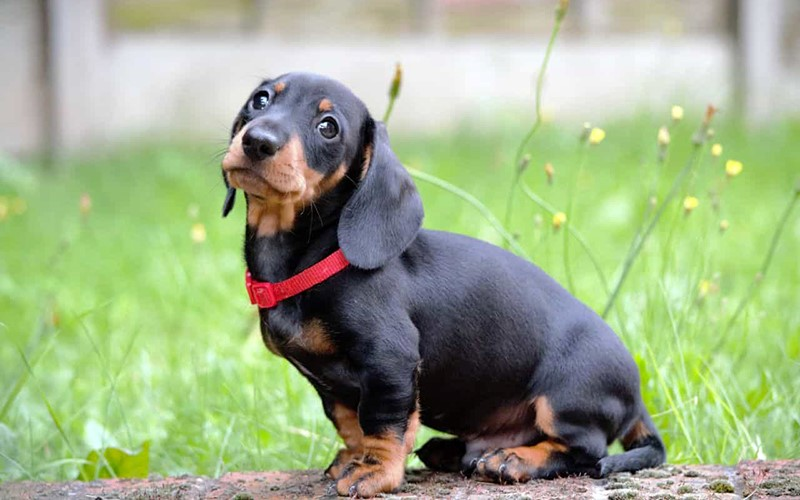

Đặc điểm chó Golden
Ngoại hình
Đôi chân ngắn, to giống chân gấu. Mõm dài, có khả năng đánh hơi tốt nhất trong tất cả các loại chó cảnh.
Tai dài, rủ xuống tận mặt, có con còn rủ xuống tận miệng.
Lông mượt có hai màu cơ bản là đen và vàng bò. Một số cá thể bị đột biến gen thì lông có màu socola hoặc đen – vàng. Lông của chó Lạp Xưởng mềm mịn như tơ tằm rất đẹp nhưng ít. Chúng có ba loại lông là lông ngắn, lông dài và lông mượt.
Trung bình một chú chó Lạp Xưởng Dachshund trưởng thành nặng từ 7.2 – 14kg, con nhỏ nặng khoảng 4.5kg. Chiều cao dao động từ 13 – 27cm.
Loài chó đơn sắc thường có màu lông vàng hoặc nâu đỏ. Loại 2 màu thường có màu đen sẫm, nâu hoặc xám điểm lẫn màu hạt dẻ sang.
Giống chó thân dài, ngực nở, bụng hóp, hoạt bát, rắn chắc với tứ chi rất ngắn
Đầu thuôn dài, mắt hơi lồi, mõm dài với bộ hàm khoẻ mạnh cùng những chiếc răng vô cùng sắc bén
Tính cách
Chó Lạp Xưởng cực kỳ thông minh, ranh mãnh, tiếp thu nhanh và nhớ lâu hơn chó Husky, chó Samoyed.
Được xếp vào loại hơi khó dạy bảo, phản xạ có phần mạnh mẽ và hung bạo khi gặp nguy hiểm.
Khả năng bảo vệ tốt, chúng cũng rất dũng cảm và kiên cường.
Sống tình cảm, trung thành, thân thiện và quấn quýt với chủ nhân.
Rất vui vẻ, thích đào bới xung quanh.
Thích sủa, tiếng sủa to và vang ing tai.